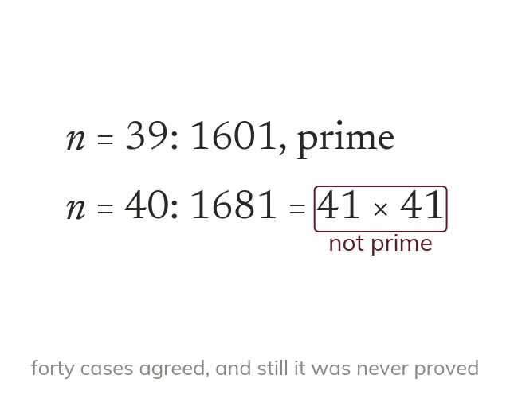

Checking is not proving
Checking values only shows that those values work. The value of n² + n + 41 is prime until n = 40.
Checking a statement for a few values only shows that it holds for those values. The rule n² + n + 41 gives a prime for every n from 0 to 39, yet n = 40 gives 41 × 41.